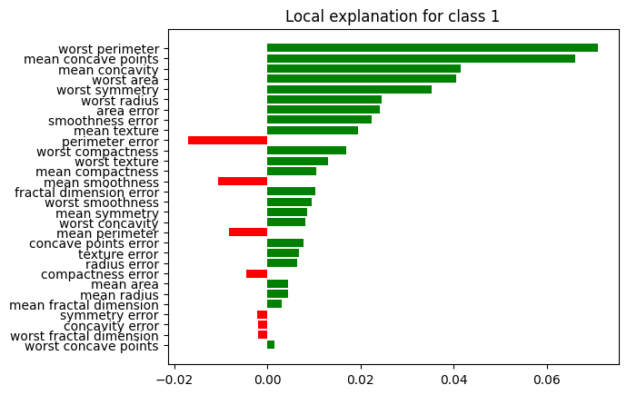

Local Interpretable Model-Agnostic Explanations (LIME) is
LIME was introduced in 2016 by Rubiero et. al.
LIME, is an approach that tries to deliver explanations for individual samples. It works by constructing an interpretable __surrogate mode__l (like a linear regression or decision tree model) to approximate predictions of a more complex model in the neighborhood of a given sample.
It randomly samples data points in the neighbourhood of the sample point and lets the complex model make predictions for those points. This data set is then used to fit a surrogate model which can than be analysed to identify important features.
We start by loading the model built using all of the features:
1 2 3 4 5 | |
Before applying LIME, we standardize the input features using a StandardScaler. Although the Random Forest model itself does not require scaling, LIME relies on distance-based sampling and weighting when generating local perturbations. Since Euclidean distance is sensitive to feature scale, unscaled features with larger numeric ranges could dominate the locality definition and distort the explanation.
1 2 3 4 5 6 | |
A key parameter in LIME is the kernel_width, which controls how strongly perturbed samples are weighted based on their distance to the instance being explained. Smaller values enforce a more local explanation by giving higher weight to very similar samples, while larger values result in a broader, more global approximation. Choosing an appropriate kernel width is challenging and remains an open research question. It is also one of the main limitations of LIME, as explanations can vary substantially depending on this parameter. Feel free to experiment with different values and observe how the explanations change.
1 | |
After scaling, we initialize the LimeTabularExplainer, which uses the scaled training data as the background distribution for generating local perturbations around the instance being explained.
1 2 3 4 5 6 7 8 9 10 11 12 13 14 | |
Once we have defined the setup for LIME, we select an instance of interest for which we want to generate explanations, define the neighborhood size (i.e., the number of perturbed samples used to fit the surrogate model), and choose the type of surrogate model. The neighborhood size should be sufficiently large to ensure that the surrogate model is trained on enough locally perturbed samples. As a surrogate model, we use Linear Regression, since its coefficients provide an intrinsically interpretable representation of feature influence in the local region around the instance.
When using LIME, both the prediction function and the explanation target depend on the learning task:
For regression, we pass the model’s predict function, since LIME explains the predicted continuous output directly. No class selection is required because there is only a single numeric prediction.
For classification, we pass the model’s predict_proba function, as LIME requires class probability scores rather than discrete class labels. In addition, we must specify which class to explain:
top_labels=1 explains the predicted class (recommended for understanding the model’s decision).labels=(instance_label,) explains the true class (useful when analyzing misclassifications).Because we standardized the data before passing it to LIME, the perturbed samples generated by the explainer are also in standardized space. However, the Random Forest model was trained on the original (unscaled) feature values. Therefore, we use scaler.inverse_transform inside the predict_proba function to transform the perturbed samples back to the original feature scale before passing them to the model. This ensures that predictions are computed in the correct feature space and remain consistent with the trained model.
Pick instance 94 for explanation, which is correctly classified as "1_Cancer" by the model. We will explain the predicted class for this instance, which is the recommended approach for understanding the model's decision.
1 2 3 4 5 6 7 8 9 10 11 12 13 14 15 | |
To assess how well the simpler surrogate model approximates the predictions of the complex model, we need a metric that summarizes the quality of the surrogate’s predictions. This metric serves as a fidelity measure, indicating how reliably the interpretable model represents the behavior of the original model in the local neighborhood.
While the choice of fidelity metric is flexible, it is essential to evaluate the surrogate model’s predictive performance whenever LIME explanations are used. After all, how much confidence would you place in an explanation generated by a surrogate model that fails to approximate the complex model’s predictions accurately?
In our case, we use a linear regression model as the surrogate. A commonly used measure of goodness of fit for linear regression is the $R^$ score. It quantifies how well the linear model explains the variation in the complex model’s predictions within the local neighborhood. An $R^$ value close to 1 indicates a strong local approximation, whereas lower values suggest that the surrogate model may not faithfully capture the complex model’s behavior.
1 | |
All that LIME did was to fit a linear regression model to approximate the complex model's predictions, i.e., the predictions of the Random Forest model. The dataset for creating the fit consists of the neighborhood samples that were randomly created around our selected instance.
Linear regression models estimate a single parameter (coefficient) for each feature. Those coefficients describe the mathematical relationship between each feature (independent variable) and the target (dependent variable). The sign of a linear regression coefficient tells you whether there is a positive or negative correlation between the feature and the target. The coefficient value signifies how much the mean of the target changes given a one-unit shift in the feature while holding other features in the model constant. Hence, we can plot the coefficients of the Linear Regression Surrogate model to understand which features are most predictive for our instance of interest.
Note: LIME is not restricted to linear regression models; other easy-to-interpret surrogate models could be used like decision trees.
Run code
1 | |
to generate

For this example, we have an instance where the true class is 1_Cancer, and the Random Forest model also predicts 1_Cancer, indicating a correct classification.
The local explanation for class 1 highlights the features that most strongly influenced the model’s decision for this specific patient. Features shown in green push the prediction toward class 1 (malignant/cancer), while features shown in red push it away from class 1 (toward the benign class). The length of each bar represents the weight assigned by the local linear surrogate model. Larger absolute values indicate stronger influence within the local neighborhood around this instance.
The strongest positive contributors include worst_perimeter, mean_concave_points, mean_concavity, and worst_area. For this instance, elevated values of these features substantially increase the predicted probability of malignancy, according to the surrogate model.
Importantly, this explanation is local: it describes how the model arrived at its prediction for this particular sample and does not necessarily reflect global feature importance across the dataset.